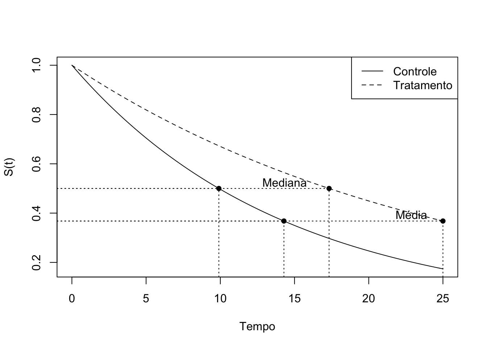

Exercícios Capítulo 5 - Modelos paramétricos
Pacotes e opções
Exercícios
5.1
Em um estudo, ajustou-se um modelo exponencial aos tempos de sobrevivência observados (em meses) nos grupos controle e tratamento. Os modelos encontrados foram:
\(S_tr(t) = exp(-0,07t)\), para o grupo tratamento
Com base nesses modelos, responda:
- Qual foi o risco instantâneo estimado para o grupo controle? E para o grupo recebendo tratamento?
- Qual foi a sobrevivência média e mediana no grupo controle? E no grupo recebendo tratamento?
- As duas curvas estimadas de sobrevivência são apresentadas na figura a seguir. Localize, nessa figura, o tempo mediano e médio calculado. Analisando o gráfico, você acha que o tratamento teve efeito na sobrevivência desses pacientes?

O risco instantâneo estimado pode ser obtido através da seguinte expressão:
\[\lambda(t) = f(t)/S(t)\] Sendo \(f(t) = \alpha exp(-\alpha t)\) e \(S(t) = exp(-\alpha t)\), e \(\alpha_{c} = 0,07\) e \(\alpha_{tr} = 0,04\), podemos afirmar que:
O risco instantâneo para o grupo de controle é: \[\lambda _c(t) = \frac{0,07 exp(-0,07 t)}{exp(-0,07 t)} = 0,07\] E para o grupo de tratamento é: \[\lambda _{tr}(t) = \frac{0,04 exp(-0,04 t)}{exp(-0,04 t)} = 0,04\]
A sobrevivência mediana pode ser estimada igualando \(S(t) = 0,5\), enquanto o tempo médio de sobrevivência no modelo exponencial pode ser estimado por \(\frac{1}{\alpha}\).
Ou seja, para o grupo de controle, o tempo médio de sobrevivência é dado por \[\frac{1}{\alpha_c} = \frac{1}{0,07} = 14,2857\] e o tempo mediano de sobrevivência é dado por \[0,5 = exp(-0,07t)\] \[\frac{\ln(2)}{\alpha_c} = \frac{\ln(2)}{0,07} = 9,9\]
Ou seja, para o grupo de tratamento, o tempo médio de sobrevivência é dado por \[\frac{1}{\alpha_{tr}} = \frac{1}{0,07} = 14,2857\] e o tempo mediano de sobrevivência é dado por \[0,5 = exp(-0,04t)\] \[\frac{\ln(2)}{\alpha_{tr}} = \frac{\ln(2)}{0,04} = 17,3\]
Podemos plotar as curvas de sobrevivência com os pontos relevantes para a sobrevivência mediana e média nas duas curvas:
# Curve para a plotagem de CONTROLE
alfa = 0.07
curve(exp(-alfa * x), from = 0, to = 25, ylab = "S(t)", xlab = "Tempo")
# Mediana do modelo exponencial
p50 <- log(1/0.5)/alfa
# Média do modelo exponencial
pm <- 1/alfa
# Segmentos de reta e pontos para a plotagem
# Mediana
segments(p50, 0, p50, exp(-alfa * p50), lty = 3)
segments(-1, exp(-alfa * p50), p50, exp(-alfa * p50), lty = 3)
points(p50, exp(-alfa * p50), pch = 16)
# Media
segments(pm, 0, pm, exp(-alfa * pm), lty = 3)
segments(-1, exp(-alfa * pm), pm, exp(-alfa * pm), lty = 3)
points(pm, exp(-alfa * pm), pch = 16)
# Curve para a plotagem de TRATAMENTO
alfa = 0.04
curve(exp(-alfa * x), from = 0, to = 25, ylab = "S(t)", xlab = "Tempo", add = TRUE, lty = 2)
# Mediana do modelo exponencial
p50 <- log(1/0.5)/alfa
# Média do modelo exponencial
pm <- 1/alfa
# Segmentos de reta e pontos para a plotagem
# Mediana
segments(p50, 0, p50, exp(-alfa * p50), lty = 3)
segments(-1, exp(-alfa * p50), p50, exp(-alfa * p50), lty = 3)
points(p50, exp(-alfa * p50), pch = 16)
text(p50, exp(-alfa * p50), "Mediana", adj = c(1.5, -0.25))
# Media
segments(pm, 0, pm, exp(-alfa * pm), lty = 3)
segments(-1, exp(-alfa * pm), pm, exp(-alfa * pm), lty = 3)
points(pm, exp(-alfa * pm), pch = 16)
text(pm, exp(-alfa * pm), "Média", adj = c(1.5, -0.25))
# Legendas
legend("topright", c("Controle", "Tratamento"), lty = 1:2)
Tanto pela análise gráfica, quanto pela análise dos tempos, é provável que o tratamento tenha tido efeito na sobrevivência dos pacientes.